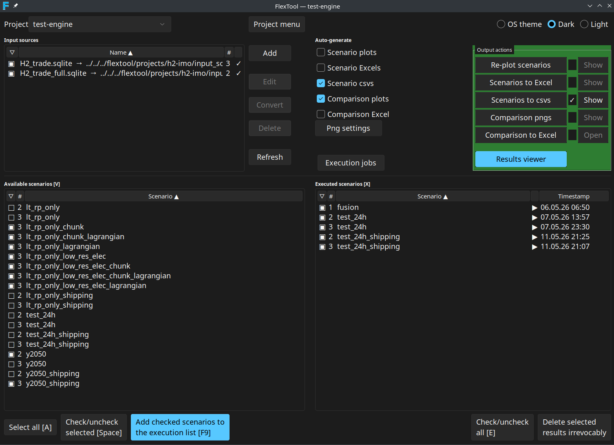

FlexTool GUI
The FlexTool GUI is a standalone Tkinter application and the primary way to use FlexTool. It manages projects, input sources, scenario execution, and output generation in a single window. Start it from the FlexTool installation directory with:
python -m flextool.gui
See Install with FlexTool GUI for installation, and Architecture for what the GUI does under the hood. Spine Toolbox is the workflow-oriented alternative interface, and Excel / LibreOffice is the parallel spreadsheet editor for the same input sources. For headless / CI use see the Terminal CLI.

Workflow at a glance
flowchart TD
P[Project
load / create]
I[Input sources
.sqlite or .xlsx]
A[Available scenarios
filtered by checked sources]
Q[Execution queue]
X[Executed scenarios
parquet on disk]
O[Outputs table
pngs / Excel / CSV / comparison]
R[Result viewer
to browse directly]
P --> I --> A
A -- Add checked --> Q
Q -- Execute --> X
X --> O
X --> R
I -. Edit .-> E[Spine DB editor
or Excel / LibreOffice]
Q -. Auto-gen
after each run .-> O
Editing an input source jumps out to the Spine database editor or a spreadsheet application. The Auto-gen column on the Outputs table controls which derived artefacts are produced automatically after each successful execution.
Top bar: Project
Each project lives in projects/<name>/ and owns its own input sources, execution history, and settings.yaml. The Project drop-down switches between projects; Project menu opens a popup with:
- Manage projects… — create / rename / delete projects.
- UI font size — radio choices (9, 10, 11, 12, 14 pt) plus Custom… to enter any integer between 6 and 32. The chosen size is applied live to every named Tk font (body / menu / heading / tooltip / fixed) and persisted to
projects/projects.yaml. See Display and fonts. - Reset window layout — clears saved window sizes and sash positions for the result viewer and execution window. Any open viewer or execution window is closed; their defaults apply the next time they open.
F2 or double-click on the drop-down renames the current project. The most recently used project is reopened on the next launch.
Input sources
The Input sources panel lists every .sqlite and .xlsx file in the project's input_sources/ directory plus any registered external references. Each input source contributes one or more scenarios.
| Action | Effect |
|---|---|
| Add | Add a new .xlsx or .sqlite source. Imports are migrated to the current FlexTool DB version automatically. |
| Edit | SQLite opens in the Spine database editor; Excel opens in the OS default spreadsheet app. Double-click does the same. |
| Convert | Convert an .xlsx input source to a SQLite database. |
| Delete | Remove the selected source from the project. External references unlink the reference; the file on disk is untouched. |
| Refresh | Rescan input_sources/ on disk. |
The checkbox column decides whether the source's scenarios appear in Available scenarios. The # column is the source's persistent number — it is assigned the first time the source is seen and stored in settings.yaml (input_source_numbers). When a source is deleted its number is freed only when no executed-scenario folder on disk still references it; the next new source picks the lowest free number, so a deleted slot is reused once its outputs are also cleaned up. Hovering over a row with an error, empty, or "editing" status shows a Toplevel tooltip explaining the status; external references show their POSIX path relative to the project root and a reminder that Delete only removes the reference.
Right-click a row for the same actions as the buttons. Column headers sort the list; the active sort direction is shown by a small arrow.
Excel input is described in Excel interface; the Spine database editor is described in Spine database.
Add empty FlexTool input Excel
When you choose Add → empty Excel, the parameter-group picker dialog opens. Every parameter group from the FlexTool template is listed as a checkbox row. Required groups (currently timeline, model, solve_basics, basics) are highlighted at the top of the list with a yellow tint and a hover tooltip explaining that they are required for a functioning model, but can still be unchecked when assembling a model from several input sources. Bulk-action buttons select all, select required only, or clear all. The highlight colour adapts to the active dark / light theme.
See Excel interface for the resulting file structure.
Available scenarios [V]
Lists every scenario found in the checked input sources. The header text [V] is the keyboard shortcut: press V to focus the list.
| Key | Action |
|---|---|
| V | Focus the Available scenarios list |
| A | Select all rows |
| Space | Check / uncheck the selected rows |
| Alt-A | Add checked scenarios to the execution queue |
| F9 | Same as Alt-A |
| Click column header | Sort by that column |
| Right-click | Check selected / Add selected to execution jobs |
The Add checked scenarios to the execution list button queues every checked row. Scenarios already pending or running are skipped.
Executed scenarios [X]
A row appears here as soon as a scenario produces a parquet result tree under output_parquet/<scenario>_<src#>/. Parquet is the canonical result format — every other output is derived from it.
| Key | Action |
|---|---|
| X | Focus the Executed scenarios list |
| E | Check / uncheck all rows |
| Space | Check / uncheck the selected rows |
| Right-click | Check selected / View results / Delete irrevocably |
| Click the View column | Open the scenario's plot directory |
Rows whose # (source number) no longer matches any current input source are shown greyed (foreground #888888) and tagged orphan. The row stays so the outputs are visible and can be deleted explicitly with Delete selected results irrevocably.
Outputs (unified table)
The Outputs table replaces the older Auto-generate checkbox group and Output actions button column with a single bordered widget. Each row covers one derived artefact:
| Column | Meaning |
|---|---|
| Output | Display name (Scenario pngs, Scenario Excels, Scenario csvs, Comparison pngs, Comparison Excel). |
| Auto-gen | Checkbox: produce this output automatically after every successful scenario run. Persisted to settings.yaml. |
| Status | Clickable cell. Blank = not run, ✓ = produced, ⊘ = last attempt failed, animated spinner = currently running. Clicking the cell (re-)generates the output for the checked executed scenarios. |
| Action | Show opens the output folder in the system file manager; for Comparison Excel the label is Open because the target is a single file. |
Parquet is always written for an executed scenario, regardless of any Auto-gen tick. Auto-gen only controls the derived artefacts; png / Excel / CSV outputs can always be (re-)generated later by clicking the Status cell of the relevant row.
Side menu
The narrow column to the left of the Outputs table holds five user-tunable controls. It is split into a top group and a bottom group by a flexible spacer:
- Save memory — checkbox that passes
--save-memoryto scenario runs. After the LP is built, polar-high's polars / numpy LP source is dropped, the LP is written to a temp MPS file, and HiGHS solves it in a separate subprocess (viacmd_solve_mps) so the solver's working set lives outside the FlexTool address space. Trades ~+90 s I/O per sub-solve for ~5–10 GB lower peak RSS. Also disables warm-LP reuse across cascade iterations (every sub-solve cold-rebuilds). - Debug — checkbox that passes
--debug --csv-dumpto scenario runs.--debugturns on verbose engine logging;--csv-dumpwrites the cascade's processed inputs to disk after the last sub-solve for inspection. - OS theme / Dark / Light — theme radio buttons. Takes effect on the next launch and is persisted to
projects/projects.yaml. - Png settings — opens the plot configuration dialog (see Png settings).
- Execution jobs — opens the Execution jobs window.
- Results viewer — opens the Result viewer. When the viewer is already open the button relabels to Update view scenarios.
Png settings
The Png settings dialog has separate sections for scenario and scenario-comparison plots:
- Start timestep — first timestep to include in the plot range.
- Duration — number of timesteps to plot (0 = until the end of the data).
- Plot config file — YAML config defining what plots to render and how. The shipped defaults live under
templates/. - Active configs — checkbox list of named configurations from the chosen file. Only checked configs are rendered.
- Dispatch plots (comparison section only) — toggle whether dispatch time-series plots are included in comparisons. The companion Edit dispatch plots… button opens a YAML editor for the dispatch config.
The dialog is purely a configuration step; rendering happens via the Status cell of the relevant Outputs row (or automatically through Auto-gen).
Execution jobs
The Execution jobs window is a separate Toplevel dedicated to queue management. It coexists with the main window — actions in the main window keep working while the jobs window is open.
Resource controls
The top row of the window holds five spinboxes; each is a per-project setting persisted to settings.yaml. Their defaults are deliberately conservative — one job at a time, one HiGHS thread, auto-budget — so the GUI never starves the host machine by default:
| Control | Default | Meaning |
|---|---|---|
| Max. parallel executions | 1 | Number of scenario subprocesses that may run concurrently. |
| Cores per job | 1 | Passed to each subprocess as --highs-threads. |
| Memory budget/job (GB, 0=auto) | 0.0 (auto) | Soft target. Jobs are allowed to exceed it when memory is available. Only enforced when free RAM drops below the reserve and swap growth reaches the allowance — the watchdog then kills whichever running job is most over its budget. In auto mode, every successful run records its measured peak × 1.5 as the budget for the next run, persisted under scenario_resource_history. First-run fallback is (system memory − reserve) ÷ max parallel jobs. |
| Min free RAM (GB) | 0.5 | Floor for system free memory. The watchdog acts only when this floor is breached and the swap allowance is exhausted. |
| Allow swap (GB) | 0.0 | How much swap growth to tolerate, measured since FlexTool started (pre-existing swap is ignored). 0 means kill as soon as free RAM dips below the reserve. |
Together these settings let FlexTool absorb oversized-scenario pressure without taking the host system down.
Memory enforcement
On all platforms the in-process MemoryWatchdog (5-second poll) is the sole memory enforcer. It tracks per-job peak RSS and kills the most-over-budget running job only when free RAM falls below Min free RAM and swap growth reaches Allow swap. A killed-for-memory job shows a "⚠" suffix on its Peak GB cell. On Linux every job is launched via a transient systemd-run --user --scope; the FLEXTOOL_SLICE environment variable can place the scope in a user-defined cgroup slice (e.g. heavy.slice) for scheduling isolation. No MemoryHigh / MemoryMax property is set — they would stall or abort large polars collect_all calls. Windows and macOS launch the subprocess directly.
Jobs table and progress pane
The horizontal split has the Jobs tree on the left and a per-job log on the right; the sash position is persisted globally. The jobs tree has columns Status icon, source #, Scenario, Peak GB, and Timestamp. Failed and killed rows are tagged failed and rendered bright red (#ff3333).
A status label at the bottom of the window shows running/max threads | used/total GB. When pending jobs are being held back the label appends | Thread limited (max workers reached) or | Memory limited (admission blocked by the reserve) and the label text turns theme-aware red — #c62828 on the light theme, #ff6b6b on dark / OS-theme. The colour clears as soon as there are no pending jobs or the limit is no longer active.
Per-job actions
- ▲ / ▼ (or PgUp / PgDn) — reorder pending jobs.
- Kill selected — terminate selected running or pending jobs.
- Remove selected — drop finished or killed rows from the list.
- Pause executions / Continue executions — pause the scheduler so already-running jobs finish but no new ones start.
- Kill all — terminate everything that is running or pending.
The log pane appends lines as the selected job produces stdout and auto-scrolls only when the user is already at (or near) the bottom; scrolling up to read older output suppresses the auto-scroll.
Result viewer
The Result viewer is its own window. It reads scenarios directly from parquet, so navigation is live and is not constrained by the Png settings (start timestep, duration, etc.); the Png settings only affect pre-rendered PNG output.
| Key | Action |
|---|---|
| S | Focus the Scenarios list |
| P | Focus the Plots list |
| V | Switch to single-scenario view |
| X | Switch to comparison view |
| ↑ / ↓ | Navigate scenarios / plots |
| ← / → | Previous / next variant in the current plot |
| PgUp / PgDn | Previous / next variant (alias) |
| Ctrl-A | Select all comparison rows |
| Alt-↑ / Alt-↓ | Reorder comparison rows |
| Tab | Cycle focus between the three panes |
Click the Results viewer button in the side menu, or View results in the right-click menu of an executed scenario, to open it. Closing the main window also closes the viewer.
Two behaviour notes worth knowing:
- Style scoping. The plot tree's selection highlight is mapped on a dedicated
PlotTree.Treeviewttk style, so opening the viewer no longer overwrites the main window's global Treeview selection colours. The main window's blue selection survives a viewer open / close cycle. - Off-UI-thread figure builds. Plan-path figure construction (
build_figure_from_plan) runs on a background executor. Most plots are essentially instant, but bar plots with hundreds of items per file can take tens of seconds; running them off the Tk main thread keeps the GUI responsive during the render and avoids the "freeze" the user would otherwise see.
Display and fonts
All text-rendering widgets share six named Tk fonts that are configured at startup from GlobalSettings.font_size_pt (body / menu / text — default 10 pt) and GlobalSettings.code_font_size_pt (TkFixedFont used by logs; 0 = auto = body + 2). Headings are body + 2 pt bold; tooltips are body − 1. Sizes are POINTS, so Tk's scaling factor DPI-scales them automatically.
Changing the size via Project menu → UI font size calls setup_fonts and recomputes the Treeview row height live — every widget that uses the named fonts updates without restart. The new size is persisted to projects/projects.yaml.
Per-monitor DPI. When the main window is moved between monitors with different scaling factors, the <Configure> handler reads winfo fpixels 1i and, if the effective DPI has changed by more than 10 %, re-applies the configured font sizes so points render at the new DPI. Already-placed widgets keep their pixel positions until the user resizes or re-opens the window; this is intentionally a partial fix — it beats leaving text frozen-tiny or frozen-huge until restart. If auto-detection picks the wrong monitor, setting FLEXTOOL_DPI at startup forces a value.
Where things live on disk
projects/projects.yaml— global settings (theme, font sizes, last project, jobs-window sash).projects/<project>/settings.yaml— project settings: Auto-gen flags, Debug / Save-memory checkboxes, per-projectexecution_limitsandmax_workers,input_source_numbers,bare_output_owners,scenario_resource_history, viewer state.projects/<project>/input_sources/—.xlsxand.sqliteinput files.output_parquet/<scenario>_<src#>/— canonical results, always written. New writes always carry the_<src#>suffix so the folder name itself records which source produced it. Pre-existing bare-name folders from older projects are still readable viabare_output_owners; the GUI flags rows whose source no longer exists as orphan.output_plots/<scenario>_<src#>/— PNGs from scenario plots.output_excel/<scenario>_<src#>.xlsx— Excel export of one scenario.output_csv/<scenario>_<src#>/— CSV export of one scenario.output_plot_comparisons/— comparison plots and Excel workbook.output_parquet_comparison/— parquet feeding the comparison plots and viewer.
See also
- Install with FlexTool GUI
- Interface overview — which interface to pick
- Terminal CLI — headless / CI usage
- Excel interface — the parallel spreadsheet editor
- Spine database — the SQLite input format
- Spine Toolbox — the workflow alternative
- Architecture — what runs under the hood